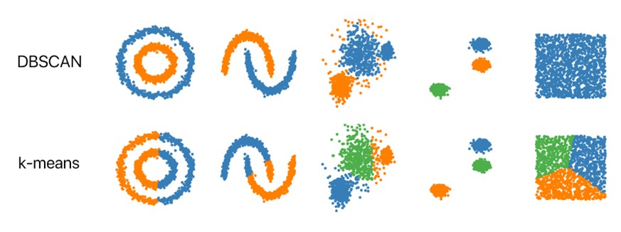
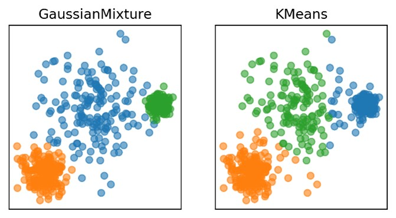
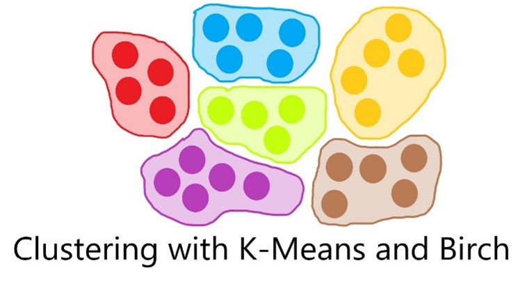
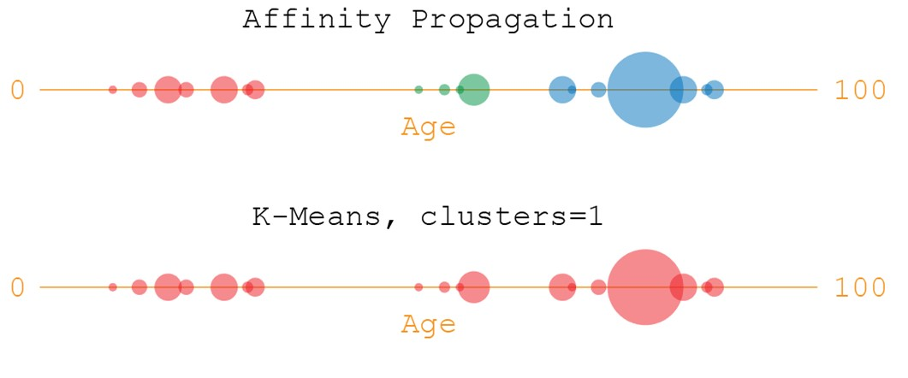
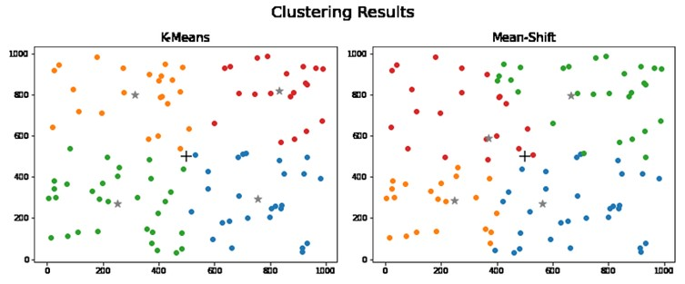
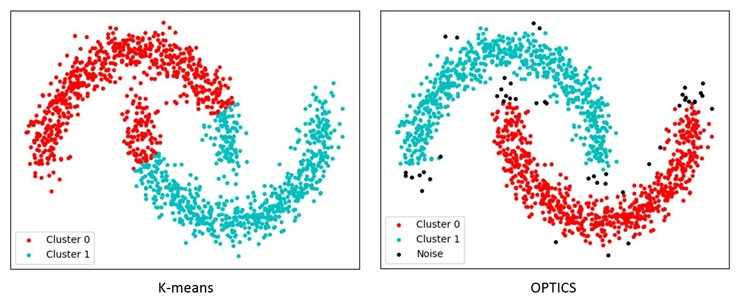
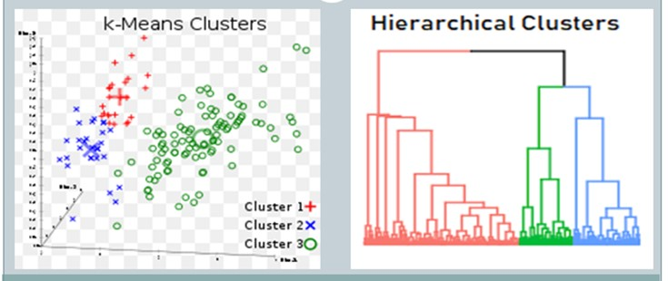

K-Means clustering is a foundational algorithm in unsupervised learning, prized for its simplicity and computational efficiency. However, its performance can vary significantly compared to other clustering algorithms depending on the dataset and the specific characteristics of the clusters.
K-Means vs. DBSCAN: K-Means assumes clusters are spherical and evenly sized, which can limit its effectiveness with non-spherical or unevenly distributed clusters. In contrast, DBSCAN (Density-Based Spatial Clustering of Applications with Noise) excels at identifying clusters of arbitrary shapes by focusing on areas of high density and is robust to outliers. However, DBSCAN requires careful tuning of its parameters, such as eps (the maximum distance between points in a cluster) and min_samples (the minimum number of points required to form a dense region). While K-Means scales efficiently with large datasets, DBSCAN’s performance degrades with large datasets due to its complexity

Means vs. Gaussian Mixture Models (GMM): GMMs provide a probabilistic approach to clustering, assuming data is generated from a mixture of Gaussian distributions. Unlike K-Means, which assigns each point to a single cluster, GMMs offer a probability distribution over clusters, accommodating data with more complex structures and varying shapes. This probabilistic nature allows GMMs to handle ellipsoidal clusters better than K-Means. However, GMMs are computationally more intensive and require specifying the number of Gaussian components, which can lead to issues with convergence and local optima.

K-Means vs. BIRCH: BIRCH (Balanced Iterative Reducing and Clustering using Hierarchies) is designed to handle large datasets efficiently by summarizing d ata into a hierarchical clustering feature (CF) tree. It is particularly effective when the dataset is too large to fit into memory, as it reduces the complexity by working on the summarized data rather than the full dataset. K-Means, in contrast, processes all data points directly and can be computationally expensive for large datasets. While BIRCH is more scalable, it primarily supports numeric data and may require careful parameter tuning to achieve optimal results.

KK-Means vs. Affinity Propagation: Affinity Propagation is unique in that it does not require specifying the number of clusters ahead of time. It works by sending messages between data points to identify exemplars, which represent clusters. This approach allows for discovering clusters without predefining their number and can handle complex cluster structures better than K-Means. However, Affinity Propagation can be computationally demanding and is sensitive to its parameters, such as the damping factor.

K-Means vs. Mean-Shift: Mean-Shift is a non-parametric algorithm that finds clusters by shifting data points towards regions of high density. It is effective for discovering clusters of arbitrary shapes and does not require specifying the number of clusters. However, Mean-Shift can be slow and resource-intensive, especially with large datasets, due to its iterative nature. In compa rison, K-Means is faster and more scalable but may struggle with clusters of non-spherical shapes.

K-Means vs. OPTICS: OPTICS (Ordering Points To Identify the Clustering Structure) is similar to DBSCAN but extends its capabilities to handle clusters with varying densities. It orders data points to identify clusters and can detect a range of density-based clusters, making it more flexible than K-Means in dealing with non-uniform cluster densities. However, OPTICS can be slower than K-Means due to its complex ordering process.

K-Means vs. Agglomerative Hierarchical Clustering: Agglomerative Hierarchical Clustering builds clusters iteratively by merging smaller clusters into larger ones, creating a dendrogram that visualizes cluster relationships. This approach does not require specifying the number of clusters upfront and is effective for understanding hierarchical structures. However, it is less efficient for large datasets and may be less scalable than K-Means, which is more suited for practical clustering of large datasets with well-defined spherical clusters.

K-Means is a powerful and widely used clustering algorithm, its effectiveness is limited by its assumptions of cluster shape and size. Other algorithms, such as DBSCAN, GMM, BIRCH, Affinity Propagation, Mean-Shift, OPTICS, and Agglomerative Hierarchical Clustering, offer advantages in handling more complex clustering scenarios, varying densities, and large datasets. The choice of algorithm should be guided by the specific requirements of the data and the clustering task at hand.